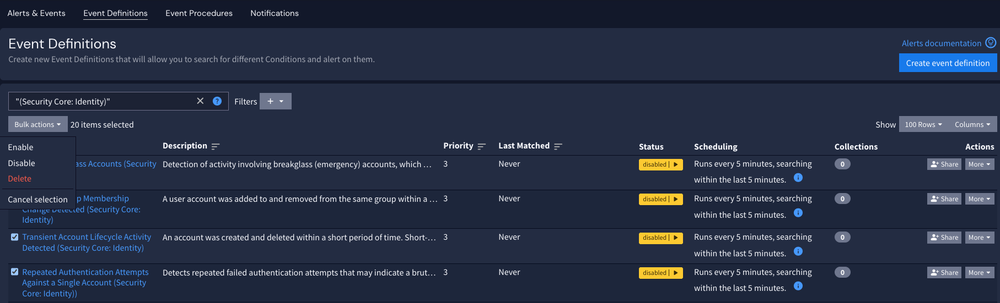
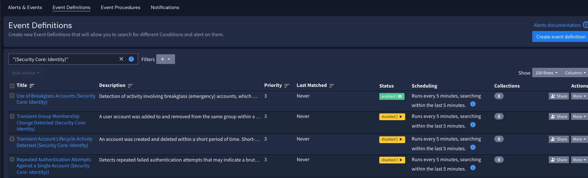

To find the event definitions associated with Security Core:
Navigate to the Alerts page.
Select Event Definitions.
Search for the term "Security Core."
This will limit the results to event definitions that include this phrase.
If you wish to find content for a specific attack surface, use one of the terms below.
| Search Term |
|---|
| (Security Core: Identity) |
| (Security Core: Endpoint) |
| (Security Core: Malware) |
| (Security Core: Data) |
| (Security Core: Perimeter) |
| (Security Core: Web) |
| (Security Core: Cloud) |


In some cases, you may wish to send alerts to an external system for analysis; this could be as simple as an email alert, but it could also go to any destination, such as an incident management system. See the core Graylog documentation for a full list of notification types.
If you wish to send Security Core alerts to a different system, you can follow the standard notification process. For Security Core, consider including the event procedure steps in the notification so that you can take any next steps defined on the alert directly from the external system.